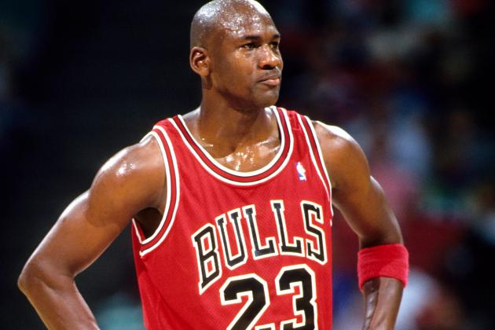
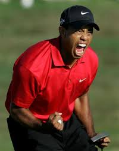

Evan's Website
Welcome to my top 3 sports ranking website
|
|
Today I will be ranking the top 3 athletes of all time accompanied with a picture of the athlete and a reason for the ranking. Please enjoy.
#1 Michael Jordan
|

|
Jordan earns this spot for being the most dominant player ever in a single sport. Unlike other sports such as baseball and football, basketball has one clear number one athlete. Also Jordan helped his team more than an athlete in any other sport could because in basketball there are only 10 people playong at a time.
#2 Deion Sanders

|
Deion Sanders makes this spot for being a dominant player in two sports, baseball and football. Saunders is the only athlete to play in both the World Series and the Super Bowl.
#3 Tiger Woods
|

THIS SPORTS BLOG IS TERRIBLE
|
Just like Jordan, Tiger Woods is clearly the most dominant and iconic player of his respective sport. Woods has has won 79 official PGA events, including 14 majors. He is still young, and has time to win even more tournaments.